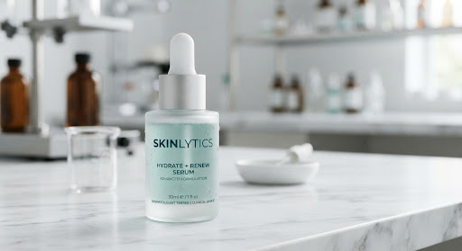
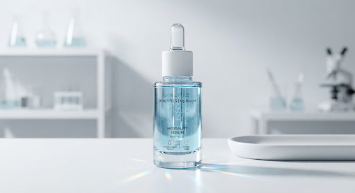
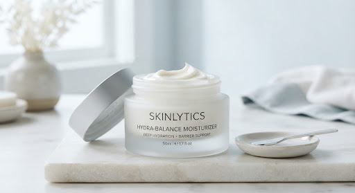

search
My Routine
Clinically optimized based on your last scan (Jan 24).
ac_unit
Seasonal update — winter adjustments ready
Increased barrier support recommended due to humidity drop.
wb_sunny
Estimated time
8 minutes
1

Cleansing
Hydrating Gentle Cleanser
Focus: Preservation of natural lipids
2:00
Min duration
Instructions expand_more
Apply a dime-sized amount to damp skin. Massage in circular motions for 60 seconds, paying particular attention to the T-zone. Rinse with lukewarm water to avoid thermal stress.
2

Treatment
15% Vitamin C + Ferulic Acid
Focus: Antioxidant Protection
1:00
Absorption
Instructions expand_more
Apply 4-5 drops to a dry face, neck, and chest. Allow 60 seconds for complete absorption before applying subsequent products. Avoid the orbital area.
3

Moisturization
Ceramide Barrier Cream
Focus: Transepidermal Water Loss
1:00
Application
Instructions expand_more
Apply liberally over face and neck. Press gently into the skin with palms rather than rubbing to minimize friction.